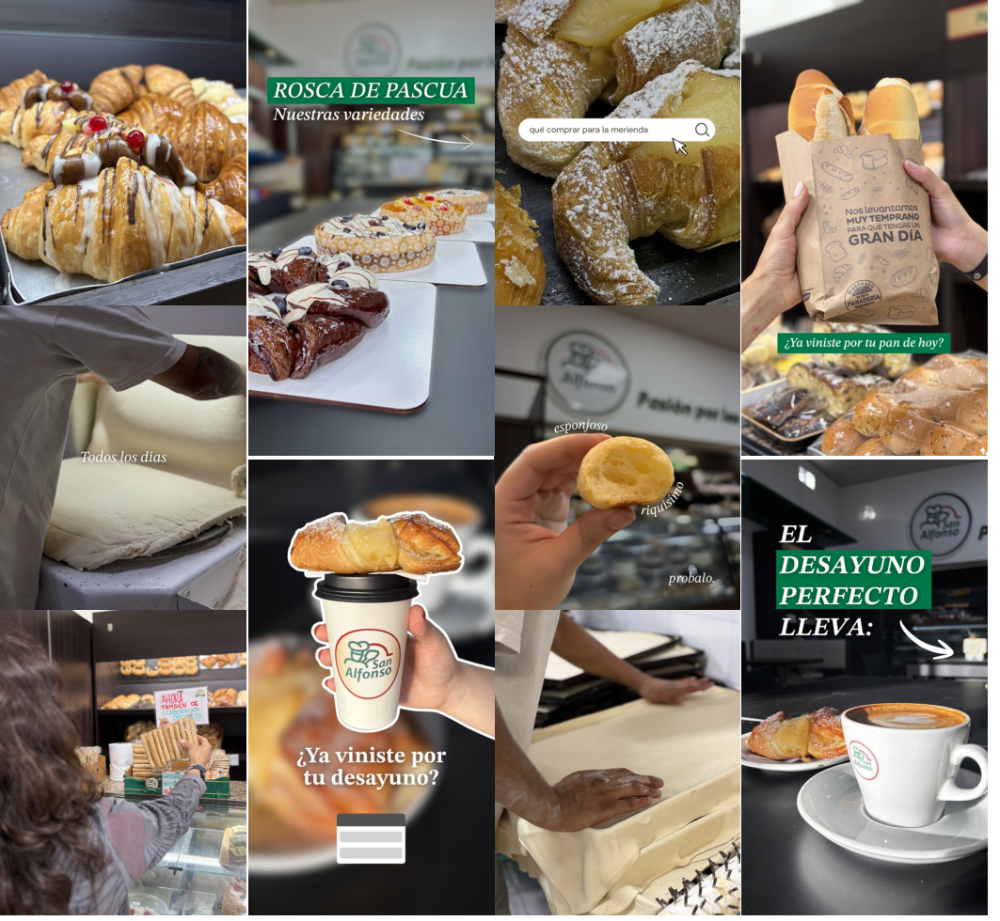
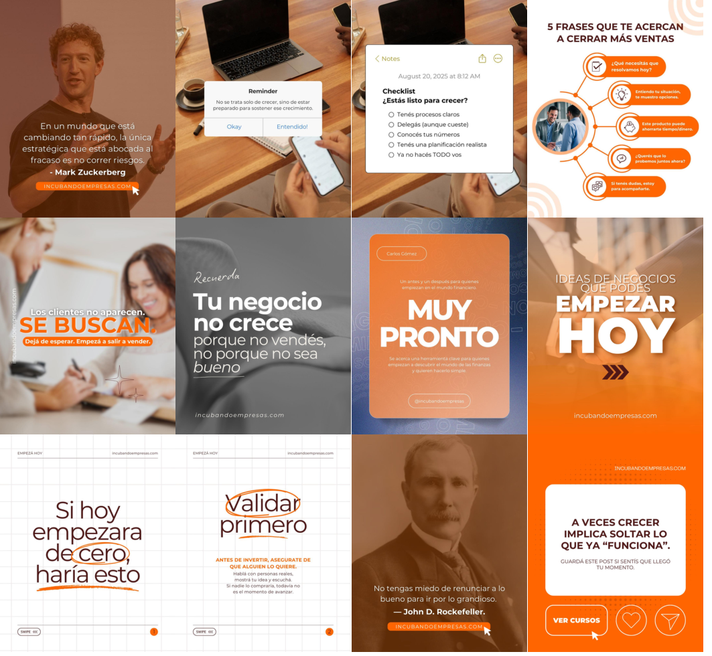
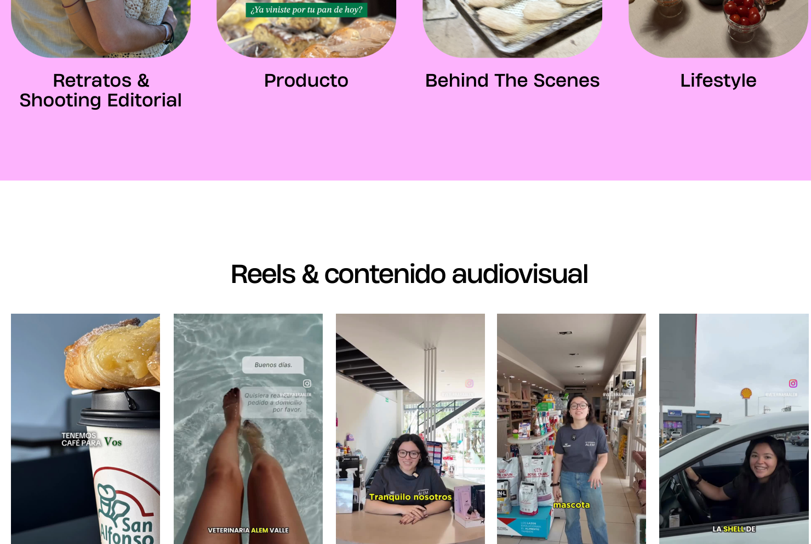

MUY CELINA® / SELECTED WORKARCHIVO CREATIVO · 2026
PORTFOLIO / PROYECTOS
IDEAS QUE SE VEN.
IDEAS QUE FUNCIONAN.
Una selección de proyectos donde se encuentran la estrategia, la creatividad y la comunicación.
DESLIZÁ PARA EXPLORAR ↓01 — TRABAJOS SELECCIONADOS
Cada marca, una historia diferente.
Una misma forma de trabajar: con intención.

San Alfonso
Contenido emocional y aspiracional para poner en valor el oficio artesanal y la identidad de marca.
EXPLORAR PROYECTO ↗
Fátima Aguilar
Comunicación informativa y comercial para tratamientos estéticos, con un lenguaje visual cercano.
EXPLORAR PROYECTO ↗
Incubando Empresas
Contenido estratégico y comunicación digital para emprendimientos, negocios y construcción de marca.
EXPLORAR PROYECTO ↗
Veterinaria Alem
Coordinación de marketing, campañas comerciales y comunicación para una red de locales en Argentina y Uruguay.
EXPLORAR PROYECTO ↗DETRÁS DE CADA PROYECTOCreatividad para pensar.
Creatividad para pensar.
Estrategia para hacer.
Del concepto a la ejecución: ideas, contenido y decisiones pensadas para cada marca.